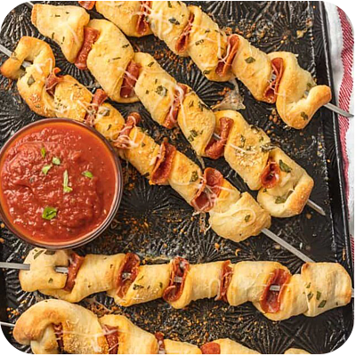

Pizza Sticks

DESCRIPTION
Pizza Sticks are a fun and creative way to eat pizza.
Pepperoni pizza on a stick is the perfect snack or party appetizer!
Pizza sticks are so genius. Talk about an easy appetizer alert!! This recipe
for pepperoni pizza on a stick is fun, oh so easy, customizable, and loved
by all.
We chose to make our pizza sticks with pepperoni and basil, but you could
layer on whatever toppings you love best. Pizza Sticks would be great for
Super Bowl parties, holiday get togethers, or just a dinner at home with the
kiddos. Adults and children will both love these and be asking for more!
INGREDIENTS
- 1 package mini pepperoni slices
- 1 tube 13.8 oz. refrigerated pizza crust
- ¼ cup unsalted butter melted
- ¾ teaspoon garlic salt
- 1 tablespoon chopped fresh basil
- 1 cup shredded Mozzarella cheese
- ¼ cup grated Parmesan cheese
- 1 cup Pizza sauce
INSTRUCTIONS
-
Soak 10 bamboo skewers in warm water at least 30 minutes or use metal
skewers. Preheat oven to 400°F and cover a baking sheet with aluminum foil.
Spray the foil with cooking spray. Unroll pizza dough onto a lightly
floured countertop. Mix together melted butter, garlic salt & basil.
Brush dough lightly with garlic basil butter.
-
Cut dough, lengthwise, into 1-inch wide strips. Thread 5-7 mini pepperoni
slices on each skewer. Be sure to leave enough space between each slice for
the pizza dough. Starting at one end of a dough strip, pierce the dough with
the pointed end of the skewer. Spiral-wrap the dough strip around the
pepperoni on the skewer, allowing the meat to peak through. Wrap the end
of the dough strip around the bottom of the skewer to fasten. Press the
dough together on each end to be sure it sticks on the skewer.
-
Place skewers on the prepared baking sheet and brush the tops with more
of the garlic basil butter. Bake 10-12 minutes or until pizza dough is
light golden brown.Remove from oven and sprinkle with mozzarella cheese.
Allow the cheese to melt (place back in the hot oven, if necessary) and
serve with pizza sauce.
HOME